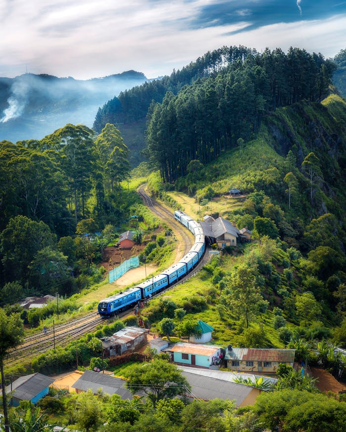
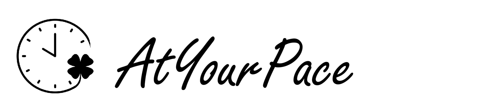
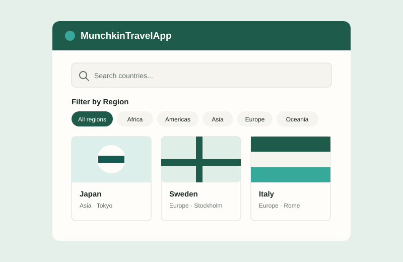

01 · Fullstack webbapp · Pågående
ETA Skåne
Mitt LIA-projekt (Lära I Arbete) från min förra utbildning, byggt med Next.js och TypeScript. Applikationen är inte färdig, och jag fortsätter att utveckla den åt företaget.
Utvalt arbete
Här är ett urval av webbprojekt med fokus på användargränssnitt, data och funktionalitet.

01 · Fullstack webbapp · Pågående
Mitt LIA-projekt (Lära I Arbete) från min förra utbildning, byggt med Next.js och TypeScript. Applikationen är inte färdig, och jag fortsätter att utveckla den åt företaget.

02 · Mobilapp
En app för att planera dagen i sin egen takt. Uppgifter kan organiseras i olika sektioner, schemaläggas och flyttas om. Appen innehåller även mallar, framstegsspårning och anpassningsbara teman.

03 · API-driven webbapp
En reseapp med paginerade länder, sökning, regionfilter och detaljsidor. Varje land kan kompletteras med väder, bilder och information från externa API:er.